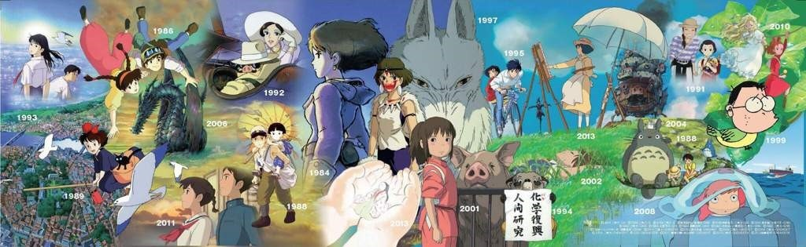

الرئيسية/ نبذة
استديو غيبلي
(株式会社スタジオジブリ)
هو إستديو رسوم متحركة (أنمي) ياباني تأسس عام 1985 على يد أعظم منتجي الأنمي باليابان هاياو ميازاكي وإيزاو تاكاهاتا وأفلامه تلقى احترامًا كبيرًا سواء من البالغين أو الأطفال على حد سواء.
شعار الإستديو هو شخصية توتورو (روح الغابة) من فيلم ميازاكي (جاري توتورو). ويقع مقر الإستديو في طوكيو.
المسلسلات التي اشتهر بها الاستديو ونالت اعجاب الكثير:
- عدنان ولينا
- هايدي
- شيرلوك هولمز
- كوالا
- وداعًا ماركو
- شما في البراري الخضراء
- جزيرة الكنز
تأسس الاستوديو بعد النجاح الباهر لفيلم ناوسيكا أميرة وادي الرياح عام 1984 الذي كتبه وأخرجه ميازاكي.
لكن فلم ناوسيكا أميرة وادي الرياح غالبًا ما يُعتقد أنه واحد ضمن أفلام استديو جيبلي، فقد أنتج وأصدرعام 1985 قبل تأسيس الإستديو
الانطلاقة الحقيقية لاستوديو جيبلي، كانت بإنتاج فيلم قلعة في السماء، الذي حقق 775000 مشاهدة في قاعات السينما؛ وهو رقم ضخم بالنسبة لحداثة أفلام الأنمي وقت ذاك
بعد نجاح قلعة في السماء، قرر الصديقان إنتاج فيلم جاري توتورو، وقبر اليراعات، الأول من إخراج ميازاكي والثاني من إخراج تاكاهاتا، وحقق الفيلمان ما كان منتظرًا منهما؛ لدرجة أن توتورو، هذا المخلوق الغريب، قد تحول إلى شعار يميز شركة جيبلي
شعار الاستديو تظهر فيه شخصية توتورو من فيلم جاري توتورو
قام الاستديو بإنتاج أفلام عديدة لميازاكي وتاكاهاتا ولآخرين أمثال تومومي موشيزوكي وهيرويوكي موريتا وغورو ميازاكي, بينما قام الموسيقار جو هيسياشي بتقديم جميع الألحان لأفلام ميازاكي التي انتجها الاستديو.

تسلسل تاريخي لأعمال استديو جيبلي